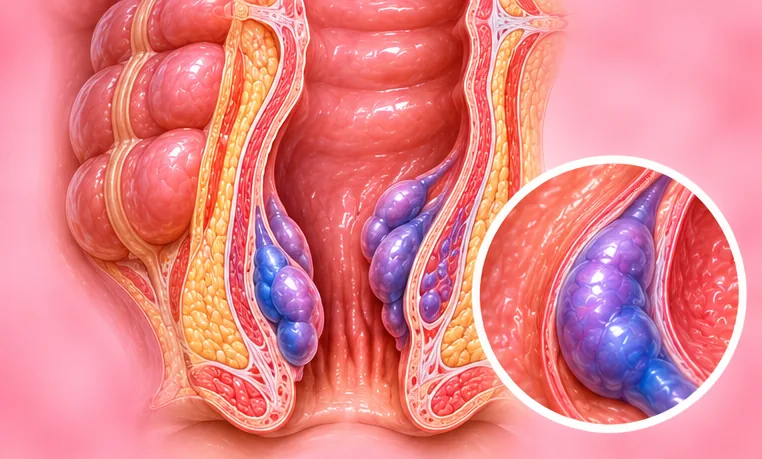

Fistula dubur tinggi
Terowong kecil antara bahagian dalam dubur dengan kulit berdekatan, lebih dalam pada otot
Apa itu
Terowong boleh terbentuk dari dalam dubur ke kulit berdekatan, lebih tinggi melalui otot. Ia sering berlaku selepas abses dan mungkin mengeluarkan nanah atau cecair.
- Sekitar dubur
- Orang dewasa, selalunya selepas abses
- Sakit, bengkak, kebocoran cecair
- Jumpa doktor
- Pakar bedah kolorektal, doktor keluarga
- Biasa pada
- Orang dewasa selepas abses dubur; pesakit penyakit Crohn
- Berjangkit
- Tidak
- Perjalanan
- Biasanya tidak tertutup sendiri; pakar boleh menerangkan pilihan
Tanda biasa

Kulit gatalPruritus
Tanda-tanda lain
- Sakit atau bengkak berhampiran dubur, lebih teruk ketika duduk
- Nanah, darah atau cecair keluar dari bukaan kecil pada kulit
- Sakit ketika membuang air besar
Mengapa ia berlaku

Punca belum diketahui sepenuhnyaIdiopatik
Punca lain
- Selalunya abses terdahulu berhampiran dubur
- Penyakit usus seperti penyakit Crohn
- Jangkitan, kecederaan atau pembedahan lepas di kawasan itu
Jumpa doktor dahulu jika
- Demam dengan menggigil dan sakit atau bengkak teruk berhampiran dubur: ke hospital segera
- Benjolan panas, merah, keras dan sangat sakit (mungkin abses)
- Pendarahan banyak dari dubur
- Najis bocor, atau anda tidak dapat mengawal angin atau najis
- Cecair atau nanah yang keluar berterusan lebih daripada beberapa minggu
Jika mana-mana berkenaan, sila jumpa doktor sebelum sesi.
Halaman ini ialah maklumat am. Sila terus mengambil ubat biasa anda dan terus berjumpa doktor.
Teruskan mengambil ubat biasa anda dan terus berjumpa doktor. Sesi kami ialah sokongan lembut dan tidak menggantikan rawatan perubatan.
Menjaga diri

Jangan picit atau korekJangan sentuh
Lebih banyak cara menjaga diri
- Jumpa doktor awal; keadaan ini biasanya tidak pulih tanpa pakar
- Pastikan kawasan bersih dan kering; basuh perlahan dengan air suam
- Ambil serat dan minum air supaya najis kekal lembut
- Guna pad lembut untuk cecair yang bocor dan tukar kerap
Beritahu ahli terapi anda
- Kulit luka, merah atau sakit
- Demam atau jangkitan aktif
- Diabetes atau deria kulit berkurang
- Kehamilan
Ahli terapi anda akan menyemaknya bersama anda sebelum bermula.
Soalan dan jawapan
Apakah Fistula dubur tinggi?
Terowong kecil antara bahagian dalam dubur dengan kulit berdekatan, lebih dalam pada otot. Terowong boleh terbentuk dari dalam dubur ke kulit berdekatan, lebih tinggi melalui otot. Ia sering berlaku selepas abses dan mungkin mengeluarkan nanah atau cecair.
Apakah tanda biasa Fistula dubur tinggi?
Kulit gatal
Mengapa Fistula dubur tinggi berlaku?
Punca belum diketahui sepenuhnya
Bagaimana menjaga diri dengan Fistula dubur tinggi?
Jangan picit atau korek
Bolehkah sesi AI Body Master membantu Fistula dubur tinggi?
Sesi ialah sokongan meridian tanpa jarum yang lembut untuk kesejahteraan anda. Ia tidak merawat atau menyembuhkan Fistula dubur tinggi dan tidak menggantikan ubat atau doktor anda. Beritahu ahli terapi anda sebelum sesi bermula.
Keadaan berkaitan
- Esofagus Barrett
- Sembelit
- Gastroenteritis virus (radang perut dan usus)
- Sumbatan usus separa
- Ketidakseimbangan bakteria usus (disbiosis)
- Sumbatan usus (obstruksi usus)
- Kekejangan usus (spasme usus)
- Fistula usus
- Kanser pundi kencing
- Pundi kencing terlalu aktif
- Kanser pundi kencing sel campuran
- Batu pundi kencing
Rujukan: General information based on public health sources such as Mayo Clinic, NHS, Cleveland Clinic and NCBI StatPearls.
Halaman dikemas kini: 2026-11-01